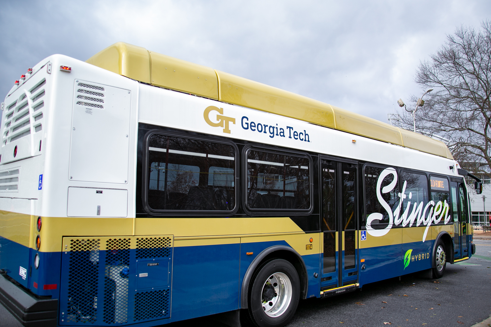

How to Survive a Zombie Apocalyse in Georgia Tech
Introduction

In the not-so-distant future, Georgia Tech faced an unimaginable crisis. It all began innocently enough—a mysterious virus emerged from the depths of the CRC bathrooms, a place already notorious for harboring all sorts of unexplained lifeforms. What seemed like a run-of-the-mill infection soon spiraled into chaos, transforming 9 in 10 students into ravenous zombies. In a campus once known for its innovation and intellect, survival instincts now reign supreme. The library is now home to eerily silent, studious zombies, while Tech Green sees daily battles of humans versus the caffeine-deprived undead. Now, you have no choice: Survive or become one of the zombies. What can you do?
The Hive
Nestled within the confines of the Hive Makerspace at Georgia Tech lies an unexpected stronghold against the encroaching zombie menace. With an arsenal of tools and boundless creativity, survivors have harnessed the Hive's potential to devise ingenious means of defense. The whir of 3D printers fabricates customized barricades, transforming plastic filaments into formidable shields. Robotics enthusiasts retrofit drones into aerial scouts, gathering critical intelligence on undead movements. Pyrotechnic experiments yield Molotov cocktails for fiery deterrents. In the heart of the Hive, innovation thrives amidst adversity, offering survivors the power to repurpose, adapt, and reclaim their Georgia Tech grounds in the face of the relentless undead horde.
Stingers
Within the dystopian landscape of Georgia Tech's zombie-ridden campus, Stingers have transformed into mobile strongholds. Harnessing the Hive Makerspace's resources, survivors outfit these buses with defensive innovations. Steel blades, once for woodworking, now protect the exteriors. Aluminum scrap metal become shields, and makeshift weaponry adorns the sides, transforming buses into rolling zombie defenses. The buses, no longer just for transportation, navigate Georgia Tech's perilous terrain, becoming both guardians of survival and safe-havens for architecture students who still have to go to the studio to finish their projects.